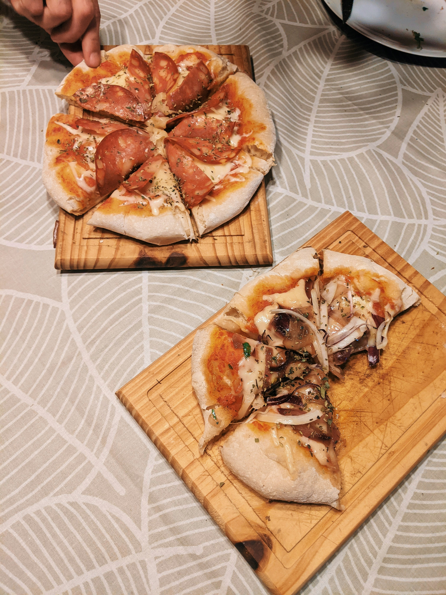
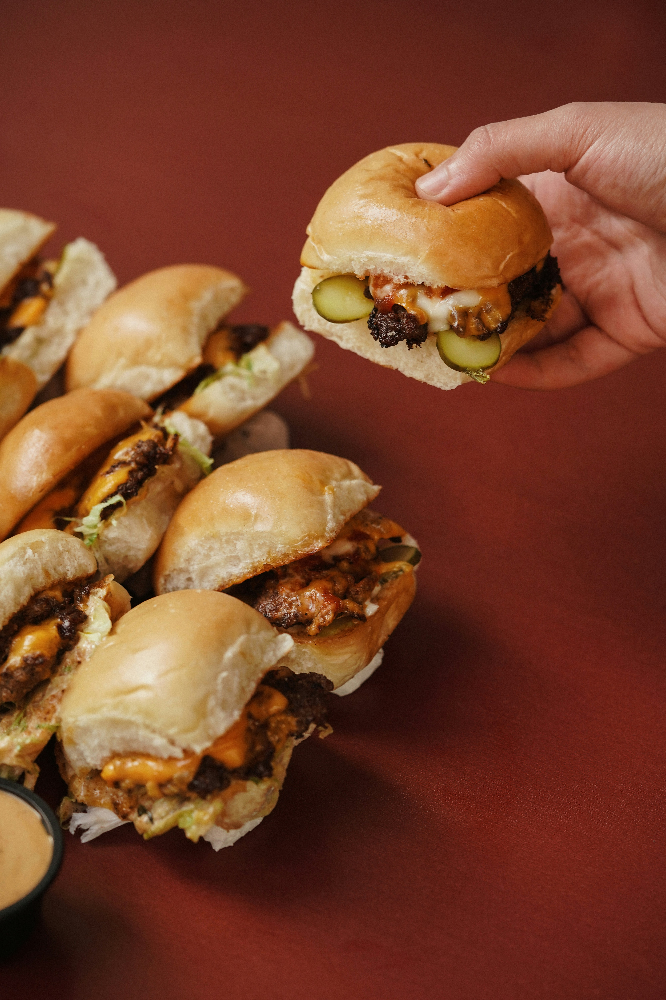

Food is a big part of what makes game night great! Whether you’re snacking between turns or taking a break for a full meal, having the right food keeps everyone happy and ready for more fun. This page is full of easy, tasty ideas — from quick snacks to share to simple meals that keep the whole group fueled up. So, grab your apron (or your takeout menu) and get ready to make your next game night delicious!

Nachos are the ultimate game-night snack — easy to share, quick to make, and totally customizable. Pile on layers of chips, melted cheese, salsa, beans, and your favorite toppings. Add a little sour cream or guac on the side, and you’ve got a snack that keeps everyone reaching for more between turns.

You can’t go wrong with chips and dip! It’s simple, delicious, and perfect for snacking while you play. Try making your own dip — something like guacamole, queso, or buffalo chicken dip adds a personal touch and a ton of flavor. Set out a few types of chips or crackers so everyone can dig in and find their favorite combo.

Mini pizzas are perfect for game night because everyone gets to make their own! Just grab some small crusts or English muffins, add sauce, cheese, and your favorite toppings, then bake them until golden. They’re easy to handle, super customizable, and always a hit with any group.

Sliders are the ideal mix of hearty and convenient. Make a batch of mini burgers, pulled pork sandwiches, or barbecue chicken sliders — anything that’s easy to grab and go. They’re filling enough to count as dinner but small enough to enjoy while the game’s still going strong.